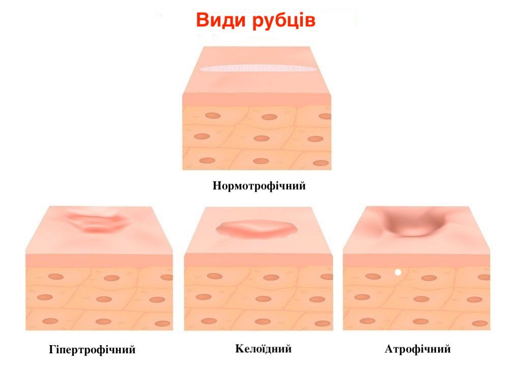

Родимки та пігментні плями взагалі не варто турбувати татуюванням. По-перше, під ними майже завжди дуже багато
капілярів. По-друге, краще не ризикувати, пошкоджуючи їхню структуру.
Родимка інакше вбирає пігмент, і передбачити, як ляже на неї той чи інший колір, не завжди можливо. Не виключені
і досить сильні кровотечі — це може ускладнити роботу тобі як майстру і процес загоєння. А найголовніше —
татуювання згодом може перешкодити лікарям діагностувати злоякісне утворення (зазвичай про його початку судять за
зміною кольору родинки).
Різновидності шрамів і можливість їх перекрииття татуюванням
Гіпертрофічні рубці.
Зазвичай темні, опуклі, що виникають після складних операцій, серйозних опіків та великих травм. Перед нанесенням
татуювання на подібний рубець необхідна консультація лікаря, оскільки клітини такого шраму можуть убирати до 2-3
разів більше пігменту, ніж здорова шкіра, а це може негативно позначитися на здоров'ї в цілому.
Келоїдні рубці.
Якщо організм схильний до утворення келоїдних рубців, то татуювання для клієнта є надто ризиковим заняттям.
Механічне пошкодження келоїдного рубця під час нанесення татуювання здатне породити нові рубці.
Атрофічні шрами, розтяжки.
Це найпоширеніший вид шрамів. Вони виникають через глибокі порізи, опіки, оперативне втручання, наприклад,
видалення апенди циту, кесарів розтин, до них же відносяться і післяпологові і гормональні розтяжки. Цей вид
шрамів найкраще підходить для перекриття татуюванням.

Багато шрамів текстуровані.
Це означає, що шкіра має різну глибину на шрамованій поверхні, що в деяких випадках ускладнює створення рівного
татуювання по всій поверхні шкіри.
Крім того, розмір татуювання також відіграє роль. Щоб перекрити досить великий шрам, потрібно досить велике за
площею татуювання.
Для того, щоб зрозуміти, чи підходить клієнту татуювання як інструмент маскування шраму, потрібно дізнатися
наступне:
Шрам повністю зажив?
Слід робити татуювання тільки на ділянці шкіри, яка повністю загоїлася. Навіть якщо шрам виглядає загоєним,
він може і не бути таким усередині. Оскільки шкіра складається з багатьох шарів, шрами можуть повністю
загоюватись до року.
Яка текстура шраму?
Найбільша частина цього питання - чи є потовщення шрамованої області порівняно з рештою
шкіри. Чим менше це потовщення - тим простіше тобі буде працювати, а значить перекриття буде якіснішим.
Який розмір шраму? Якої довжини шрам?
Якщо він великий, його складніше перекрити.
Якого кольору шрам?
Шрами бувають різних кольорів. Деякі з них червоні та яскраві, та їх складніше
перекрити. Інші бляклі мало відрізняються за кольором від решти шкіри – з ними легше працювати.